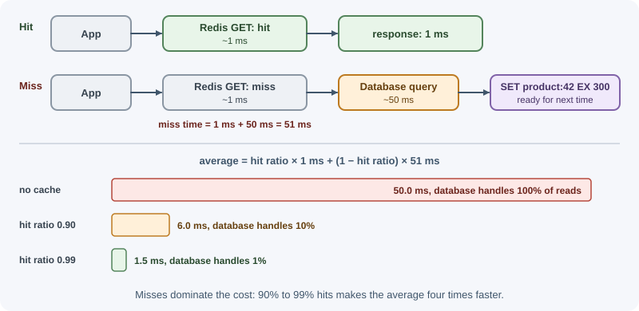
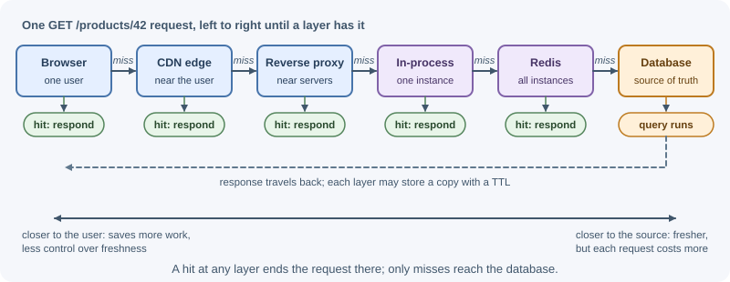

Cache Fundamentals¶
A cache is a fast, temporary copy of data kept closer to where it is needed, so later requests can skip slower work. Caches exist at every level of a system: inside the CPU, in the browser, at CDN edge servers, in application memory, in services such as Redis, and inside the database itself. This lesson explains why caching works, how to measure it, and how to decide what to cache.
Why it matters¶
Most applications read the same data far more often than they change it: product pages, user profiles, configuration, permission lists. Fetching that data from the original source every time wastes time and capacity. A well-placed cache can cut response times from tens of milliseconds to under one, and can reduce load on a database enough to postpone expensive scaling work. A badly designed cache, on the other hand, serves stale or even another user's data. Caching is therefore one of the most powerful and most error-prone tools in backend architecture.
Real-world usage¶
- Facebook (memcache). In Scaling Memcache at Facebook (NSDI 2013), Facebook engineers describe a memcached-based system that handles billions of requests per second and holds trillions of items. The paper explains that memcache is used as a "demand-filled look-aside cache" to lighten the read load on their databases: exactly the miss-then-fill pattern on this page.
- Netflix (EVCache). Netflix's open-source EVCache is a memcached-based caching solution used mainly on AWS EC2 for caching frequently used data. Its name spells out the rules of any cache: ephemeral (data lives for its TTL), volatile (data can be evicted at any time), cache (an in-memory key-value store).
- Amazon. The Amazon Builders' Library article Caching challenges and strategies describes how adding a cache cut latency and cost, until dependencies had reduced their fleet sizes and the database had been scaled down to match. From then on, the service depended on the cache to survive. That is why this page insists the system must keep working when the cache is lost.
Popular tools and providers: Redis, Memcached, Amazon ElastiCache,
Caffeine (an in-process cache for the JVM), and the lru-cache npm package
for in-process caching in Node.js.
How it works¶
Why caching works: the latency gap¶
Different storage layers differ in speed by orders of magnitude. The numbers below are rough orders of magnitude for modern hardware, not precise measurements, but the ratios are what matter.
| Operation | Approximate time |
|---|---|
| Read from CPU L1 cache | ~1 ns |
| Read from main memory (RAM) | ~100 ns |
| Read 1 MB sequentially from RAM | a few µs |
| Random read from an SSD | tens to ~150 µs |
| Network round trip inside one data center | ~0.5 ms |
GET from Redis in the same data center |
well under 1 ms (mostly the round trip) |
| Indexed database query | ~1–10 ms |
| Complex query or join over large tables | 10 ms to seconds |
| Round trip between continents | ~100–150 ms |
Reading a value from the application's own memory is thousands of times faster than a network round trip, and a network round trip to a cache is usually much cheaper than recomputing a query. Caching works because of locality: recently or frequently used data is likely to be used again soon.
Hits, misses, and the hit ratio¶
- A hit means the requested key was found in the cache.
- A miss means it was not, so the application must load it from the source (and usually store it in the cache).
- The hit ratio is
hits / (hits + misses).
The average (effective) latency of a cached lookup is:
effective latency = hit ratio × hit time + (1 − hit ratio) × miss time
where miss time = time to check the cache + time to load from the source
Example: a Redis lookup costs 1 ms and the database query costs 50 ms.
hit ratio 0.90: 0.90 × 1 + 0.10 × (1 + 50) = 0.90 + 5.10 = 6.0 ms
hit ratio 0.99: 0.99 × 1 + 0.01 × (1 + 50) = 0.99 + 0.51 = 1.5 ms
no cache: 50.0 ms
Going from 90% to 99% hits makes the average four times faster, because misses dominate the cost. The same improvement cuts database load from 10% of requests to 1%.

Cache layers¶

| Layer | Where it lives | Shared by | Typical contents |
|---|---|---|---|
| Browser cache | User's device | One user | Static assets, some API responses |
| CDN | Edge servers near users | Everyone in a region | Images, scripts, public pages, public API responses |
| Reverse proxy | In front of app servers (for example Nginx) | All users | Rendered pages, public responses |
| In-process cache | Inside each application process | Requests to that instance | Config, small lookup tables, memoized results |
| Distributed cache | Separate service (Redis, Memcached) | All app instances | Sessions, query results, computed objects |
| Database buffer cache | Database server memory | All queries | Recently used data and index pages |
Each layer closer to the user saves more work but gives you less control over freshness. HTTP and CDN layers are covered in HTTP and CDN caching.
Local compared with distributed caches¶
| In-process (local) cache | Distributed cache (Redis) | |
|---|---|---|
| Speed | Fastest: no network | Network round trip (sub-millisecond nearby) |
| Consistency across instances | Each instance has its own copy; they can disagree | One shared copy |
| Survives a restart or deploy | No | Yes (while the cache service is up) |
| Memory | Uses application memory; multiplied by instance count | Separate memory you size independently |
| Invalidation | Hard: every instance must be told | Delete the key once |
| Good for | Small, rarely changing data; very hot keys | Shared data, sessions, larger datasets |
Many systems use both: a tiny local cache with a short TTL in front of Redis, which in turn sits in front of the database.
What to cache and what not to¶
Good candidates:
- Data read much more often than it changes (catalogs, profiles, settings).
- Expensive results: aggregations, rendered fragments, third-party API responses.
- Data where slight staleness is acceptable for a known period.
Poor or dangerous candidates:
- Highly personalized data with low reuse: each entry is used once, so the hit ratio is low and memory is wasted.
- Sensitive data (tokens, health or payment details) unless it is scoped strictly per user, encrypted where required, and short-lived.
- Rapidly changing data where staleness causes harm, such as account balances or stock counts used to accept orders.
- Data that is cheap to compute or fetch: caching adds complexity for little gain.
Designing cache keys¶
A key must uniquely identify the data and every input that changes it. Missing an input causes wrong data to be served.
Good: product:42:v3 (entity, id, schema version)
user:17:orders:page=2:limit=20 (all query inputs)
search:{sha256 of normalized query}
tenant:acme:product:42 (tenant included in multi-tenant apps)
Bad: orders:page=2 <- missing the user: one user's orders served to another
product <- not unique
Guidelines:
- Use a consistent
type:id:qualifiernaming scheme with:separators. - Include the tenant, user, locale, currency, or permission scope when the value depends on it.
- Normalize inputs (sort query parameters, lowercase where safe) so equivalent requests share a key.
- Hash long inputs to keep keys short.
- Add a version segment so a change in data format can use fresh keys.
Serialization¶
Distributed caches store bytes or strings, so objects must be serialized.
JSON is the common choice: readable and portable, but Date objects come
back as strings and undefined, Map, Set, and BigInt need special
handling. Binary formats (MessagePack, Protocol Buffers) are smaller and
faster but less convenient to inspect. Compress only large values, and
keep values small; very large values are slow to transfer and can block
the cache server (see cache failure modes).
TTL basics¶
A time to live (TTL) limits how long an entry may be used. When it expires, the next read is a miss and loads fresh data. A TTL:
- puts an upper bound on staleness,
- lets unused entries disappear automatically, and
- acts as a safety net when explicit invalidation fails.
Choosing TTLs and invalidating on writes is covered in invalidation and expiration.
When to use and when not to use¶
Add a cache when:
- Measurements show the same expensive reads repeating (high read/write ratio, many identical queries or API calls).
- Slightly stale data is acceptable for a known period.
- The source is slow, expensive, rate-limited, or far away.
Do not add a cache (or not yet) when:
- A missing index or an N+1 query is the real problem; fix the query first.
- Data must be exactly current for a decision (balances, stock checks, authorization).
- Reads rarely repeat, so the hit ratio would be low.
- The team cannot yet monitor hit ratio and handle invalidation.
| Problem | Better first step | Cache it? |
|---|---|---|
| One slow query, few repeats | Index or rewrite the query | No |
| Same query repeated by many users | Distributed cache (Redis) | Yes |
| Tiny, rarely changing lookup data on every request | In-process cache with a short TTL | Yes |
| Many reads overloading the primary database | Read replicas, then cache | Often both |
| Expensive aggregation shown on dashboards | Precomputed table or materialized view | Sometimes, in front of it |
| Public static files and pages | HTTP caching and a CDN | Yes, at the edge |
Practical examples¶
Memoization with a bounded Map¶
Memoization caches the result of a function call by its arguments inside
the process. An unbounded Map grows forever and eventually exhausts
memory, so give it a maximum size and a TTL.
// memoize.js: in-process cache with TTL and a size limit
export function memoize(fn, { ttlMs = 60_000, maxEntries = 1_000 } = {}) {
const cache = new Map(); // key -> { value, expiresAt }
return async function memoized(...args) {
const key = JSON.stringify(args);
const entry = cache.get(key);
if (entry && entry.expiresAt > Date.now()) {
// Refresh position: Map keeps insertion order, newest at the end
cache.delete(key);
cache.set(key, entry);
return entry.value;
}
const value = await fn(...args);
// delete first: set() on an existing key keeps its old position in the Map
cache.delete(key);
cache.set(key, { value, expiresAt: Date.now() + ttlMs });
// Evict the oldest entry (first in the Map) when over the limit
if (cache.size > maxEntries) {
cache.delete(cache.keys().next().value);
}
return value;
};
}
import { memoize } from "./memoize.js";
async function loadExchangeRate(from, to) {
const res = await fetch(`https://rates.example.com/${from}/${to}`);
return (await res.json()).rate;
}
export const getExchangeRate = memoize(loadExchangeRate, { ttlMs: 5 * 60_000, maxEntries: 500 });
await getExchangeRate("USD", "EUR"); // miss: calls the API
await getExchangeRate("USD", "EUR"); // hit: returns from memory
This is a small LRU-style cache: entries used recently move to the end, and the oldest is evicted first. See eviction policies for proper LRU and LFU designs. Note that the cached value is the resolved result; caching the promise itself also merges concurrent calls, as shown in cache failure modes.
Measuring the hit ratio¶
const stats = { hits: 0, misses: 0 };
export async function getCached(cache, key, load) {
const cached = await cache.get(key);
if (cached !== null) {
stats.hits += 1;
return JSON.parse(cached);
}
stats.misses += 1;
const value = await load();
await cache.set(key, JSON.stringify(value));
return value;
}
export function hitRatio() {
const total = stats.hits + stats.misses;
return total === 0 ? 0 : stats.hits / total;
}
In production, export these counters as metrics; Redis also reports
keyspace_hits and keyspace_misses in its INFO stats output.
Best practices¶
- Measure first: confirm the source is actually slow or overloaded and that reads repeat.
- Treat the database as the source of truth; a cache is an optimization that can be lost at any time.
- Include every input that affects the value in the key, especially the user or tenant.
- Always set a TTL, even when you also invalidate explicitly.
- Bound in-process caches by size and time.
- Monitor hit ratio, latency, memory, and evictions.
- Design the application to keep working (more slowly) if the cache is down.
In production¶
- Hit ratio collapses right after a deploy.
Detect:
keyspace_missesjumps in RedisINFO statswhile database queries per second rise at the deploy time. Cause: the key format or version segment changed, so every key is new and the cache is cold. Fix: change key formats deliberately, warm the most-read keys before shifting traffic, and roll out gradually. - Memory grows until the process restarts.
Detect: resident memory climbs steadily and out-of-memory restarts
repeat, while heap snapshots show a large
Map. Cause: an unbounded in-process cache. Fix: cap entries and add TTLs, or use a bounded LRU library. - A user sees someone else's data. Detect: a support report; logs show two users receiving the same cached response for a personalized endpoint. Cause: a cache key that omits the user or tenant. Fix: include every input in the key, flush the affected keys, and add a test that two users get different entries.
- The database falls over when the cache restarts. Detect: database CPU and connection count spike to saturation right after a cache failover or flush. Cause: the database was sized only for cache misses, as Amazon's Builders' Library warns. Fix: capacity-plan for a cold cache, warm it before traffic, and limit concurrent database fallbacks.
- Latency spikes on some requests only.
Detect: Redis
SLOWLOGorredis-cli --bigkeysshows multi-megabyte values. Cause: large serialized objects. Fix: cache only the fields needed, split large values, and compress big blobs.
Important terminology¶
- Cache: A fast, temporary store holding copies of data.
- Hit / miss: Whether a lookup found the key.
- Hit ratio: The fraction of lookups that are hits.
- Locality: The tendency of programs to reuse recently or frequently accessed data.
- TTL (time to live): How long an entry may be used before it expires.
- Stale data: A cached value that no longer matches the source.
- Working set: The data actively used during a period of time.
- Memoization: Caching a function's result by its arguments.
Common mistakes and misconceptions¶
- Caching before measuring, and adding complexity where none was needed.
- Keys that omit the user or tenant, leaking one user's data to another.
- Unbounded in-process caches that cause memory leaks.
- Assuming a high hit ratio means the data is correct; it only means it was found.
- Treating the cache as durable storage.
- Caching everything, including data that is rarely reused, which evicts the data that matters.
- Forgetting that every app instance has its own in-process cache.
Revision questions¶
- Why does caching work, in terms of latency and locality?
- Calculate the effective latency for a 95% hit ratio, a 2 ms cache, and a 40 ms source.
- When would you choose an in-process cache over Redis, and when the reverse?
- What should a cache key include for a paginated list of a user's orders?
- Name three kinds of data you should hesitate to cache, and why.
- Why should a cache entry have a TTL even when you invalidate on write?